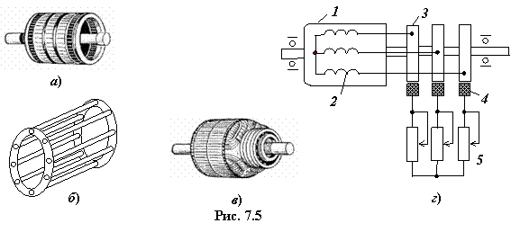

7.1.4. Устройство обмоток роторов АД
Обмотка ротора может быть выполнена короткозамкнутой или фазной. Короткозамкнутая обмотка ротора (рис. 7.5а) выполняется в виде беличьей клетки, состоящей из алюминиевых или медных (латунных) стержней и замыкающих их на торцах колец (рис. 7.5б). У асинхронных двигателей с фазным ротором (рис. 7.5в) одни концы обмоток 2 ротора соединяются с контактными кольцами 3, расположенными на валу двигателя, а другие соединены в общую точку (рис. 7.5г). Контактные латунные кольца соединяются с клеммами пускового реостата 5 с помощью угольных или меднографитовых щёток 4 и щёткодержателей.
